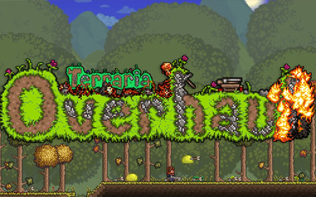
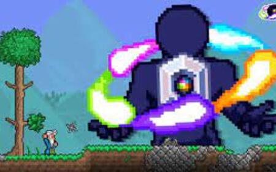
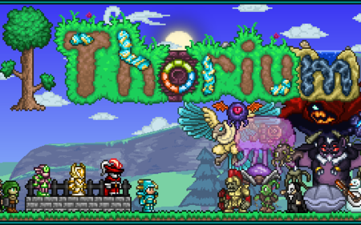
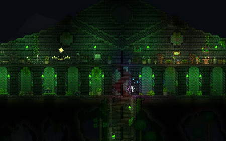

-
Overhaul

Try not to burn down your house the first time challenge (impossible)
Overhaul does exactly what it sounds like. It overhauls the entire game
rather than bringing in new content like a lot of mods usually do.
Overhaul's main points are the new features and mechanics it adds to the base game
in order to make the game fresh again.
Some of the features are:
-
Revamped weapon system
-
Revamped magic
-
New movement system
-
Brand new season system with reworked weather
-
Social features such as emotes
-
Enhanced enemy AI
-
Brand new weakness and resistance system
-
Flammable blocks (yes you can now set your house on fire)
A playtrough with these brand new features will add a whole new layer of
content and gameplay. Terraria will feel like a brand new game.
-
Fargo's mod

Feel powerless again (with Eternity mode)
If you instead prefer to keep the mechanics of Terraria normal instead of revamping
them, you can try out Fargo's mod instead. This mod is split into different smaller mods
which add specific things to the game. The most noteable one is Fargo's soul. It adds brand new
accesories and weapons as well as a new mechanic called enchantments. Enchantments provide
bonuses of other armor sets and accesories. The mod even a new difficulty which provides all
bosses in the game with unique buffs making them exponentially more powerful. If you enjoy hard
difficulties in games, this mod might be for you.
Another bonus of this mod is that it is compatible with a lot of other mods too
so you can play with multiple different mods at the same time.
-
Thorium

The "Norse mythology" mod, not the reactor fuel
Thorium is one of the biggest and wellknown mods for Terraria. In this one mod you will get:
- 2600 new items
- 60 new armor sets
- 180 new enemies
- 600 new blocks
- 10 new town NPCs
- 11 new bosses and 3 minibosses
- 2 new biomes
- 3 new classes
Many new challenges will await you, as you adventure trough the Norse mythology inspired
content this mod provides trough all of the stages of the game. On top of that, it is
not a very difficult mod to play trough, making the playtrough more enjoyable.
-
The Story of Red Cloud
Terraria with a better story
Most people might only need the most popular mods in order to enhance their experience.
Majority of the other mods are either very small or they are quality of life mods
used for making your gameplay "easier".
For those who are interested in more obscure and less popular mods, The Story of Red Cloud
is a very good choice to add to your game. This mod was created based on Terraria's engine to make an
over-arching Dark Souls inspired storyline on top of the vanilla one. Alongside it comes a few
new items, enemies, music and even bosses. A great mod for those that have
"seen and done everything" in Terraria and are looking for something unique to play through.
-
Arcania RPG

The ultimate RPG experience, now in Terraria
Have you ever wished that Terraria was a RPG game instead? With Arcania RPG
you can make this wish come true.
Choose from an array of different clases to begin your journey across a custom made world.
With a vast amount of new items and an intriguing storyline, this mod will provide you with
everything you need to have brand new gameplay experience in the form of an RPG.
However, should you want an even bigger RPG Terraria experience, the next mod on the list
might be of your interest.
-
Super Terraria World
The ACTUAL ultimate Terraria RPG experience
In similar fashion to the last mod, Super Terraria World focuses on a RPG style when
it comes to gameplay. A well developed story, many different classes and much more.
What makes this mod different is that it is also an MMO, meaning that you will always be meeting other players. On top of that,
this mod connects multiple worlds together, making player feel like they are going on one massive adventure.
Mining is disabled due to most of the world not being destructable except in some cases where you have to solve
puzzles.
-
Calamity
How to win: get the Murasama (not really)
Calamity is easily known as one of the most popular mods for Terraria. It acts as one
very big update to Terraria, adding:
- 1880+ new items
- 275+ new enemies
- 24+ new bosses
- A new type of bosses: superbosses
- 6 new biomes
- 5 new difficulties
- New NPCs
The mod creators are constantly updating and adding new features frequently
making the mod feel up to date.
Calamity is also known for the vast amount of items and references to other
series such as the Murasama from Metal Gear Rising: Revengance or MOAB wings
which reference the Bloons Tower defense games.
Besides items, the mod adds 5 new difficulties which add new mechanics and change the how bosses work.
These difficulties may also contain some exclusive loot which can not be obtained otherwise.
The Calamity mod has certainly earned its reputation as one of the best mods for Terraria.
Everyone should try this mod at least once.
-
The Stars Above
So I heard you like references to other medias